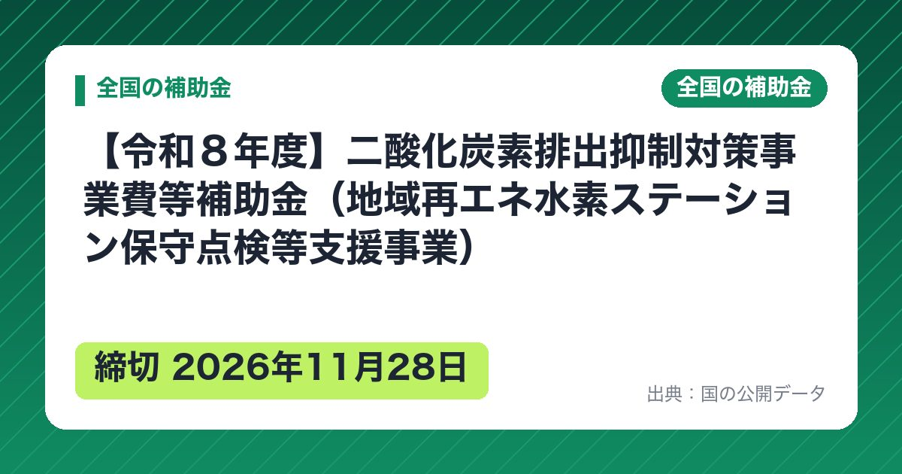

【令和８年度】二酸化炭素排出抑制対策事業費等補助金（地域再エネ水素ステーション保守点検等支援事業）

締切 2026年11月28日｜上限 220万円
概要
| 対象地域 | 全国 |
|---|---|
| 補助上限額 | 220万円 |
| 補助率 | 「保守」補助対象経費の2/3 「改修」（補助額の上限なし）地方公共団体及び中小企業 補助対象経費の2/3 、地方公共団体（上記以外）又は特別区及び中小企業以外の民間企業 補助対象経費の1/2 |
| 受付期間 | 2026年6月22日 〜 2026年11月28日 |
| 対象の従業員数 | 従業員数の制約なし |
| 利用目的 | 安全・防災対策支援がほしい / 設備整備・IT導入をしたい |
| 対象業種 | 建設業 / 製造業 / 電気・ガス・熱供給・水道業 / 複合サービス事業 / 運輸業、郵便業 / 卸売業、小売業 / 金融業、保険業 |
| 実施機関 | 再エネ等由来水素を活用した自立・分散型エネルギーシステム構築等事業 |
公募の内容（原文の抜粋）
■目的・概要
１．本事業は、再エネ水素ステーションの保守点検や、当該設備の高効率改修を支援することをもって、エネルギー起源二酸化炭素の排出抑制に資する
ことを目的とする。
２．事業の実施により、エネルギー起源二酸化炭素の排出量が確実に削減されることが重要です。このため応募申請においては、二酸化炭素排出削減量
について算出過程を含む根拠を明示していただきます。また、事業完了後の一定期間は削減量の実績を報告していただきます。
■基本的要件
① 事業を行うための実績・能力・実施体制が構築されていること。
② 提案内藤に、事業内容・事業効果・経費内訳・資金計画等が明確な根拠に基づき示されていること。
③ 暴力団排除に関する誓約事項に誓約できること。
■対象事業
１．「保守」 地域再エネ水素ステーション保守点検事業
環境省の地域再エネ水素ステーション導入事業によって整備された再エネ水素ステーションであり、原則として以下のア～ウの要件を満たす水素ステーションの保守点検事業を対象とします。
ア 当該水素ステーションから水素を供給するFCV等の年間予定走行距離等を達成すること。
イ 水素ステーションの付帯設備などを含めたシステム全体の消費電力量が再エネ発電設備の発電電力量を超過しないこと。なお超過が見込まれる場合は、以下の方法による対応を実施すること。
(a) 再エネ発電設備の増設（ただし、固定価格買取制度にて売電しないもの）
(b) 余剰電力がある既設再エネ発電設備の発電量を補填（ただし、固定価格買取制度にて売電していないもの）
(c) スコープ２ガイダンスに準拠した証書等（再エネ由来J-クレジット、グリーン電力証書、非化石証書）を使用し、超過見込み分購入
※(a)～(c)を併用することも可とする。
なお、購入にあたっては、購入したことがわかる証書の写しを原則として交付申請時に添付してください。
ウ 水素ステーション全体の消費電力量及び再エネ発電設備の発電量の実績を計測できること。
これらの電力量をはかることができる計器類が未設置の場合は、原則として交付申請時までに設置してください。
なお、設置に関する経費については対象経費とはなりません。
※水素ステーションの法定耐用年数をすでに迎えている又は今年度迎える施設は対象外
２．「改修」 設備の高効率化改修事業
環境省の地域再エネ水素ステーション導入事業によって整備された再エネ水素ステーションにおいて、エネルギー効率の向上に寄与する部品・部材（＝水素製造装置スタック関連経費）の交換及び交換を実施した設備を稼働させるのに必要な調整を行う事業を対象とします。
■対象要件
水素を製造する際に要する電力の全相当分(※1)が太陽光発電や風力その他、地域の再生可能エネルギー由来の電力で賄われている水素ステーションの装置であること。
(※1）余剰電力がある既設再エネ発電設備の発電量を補填（ただし、固定価格買取制度にて売電していないもの）又はスコープ２ガイダンスに準拠した証明書等（再エネ由来J-クレジット、グリーン電力証書、非化石証書）を使用し、超過見込み分を購入することも可とする。
■補助事業対象者
１．民間企業（リース・レンタル事業者を含む。）
２．地方公共団体
３．独立行政法人通則法（平成11年法律第103号）第2条第1項に規定する独立行政法人
４．地方独立行政法人法（平成15年法律第108号）第2条第1項に規定する地方独立行政法人
５．一般社団法人、一般財団法人、公益社団法人、公益財団法人
６．法律により直接設立された法人
７．その他環境大臣の承認を得て財団が適当と認める者
■地理条件
全国
■申請時の依頼事項
申請後は担当者様のメールアドレス確認のため応募アドレス suiso_oubo■heco-hojo.jp に申請済である旨を記載した電子メールを送付いただきますようお願いいたします。
※■は＠に置きかえてください。
■問合せ先
＜メールアドレス＞ suiso_ask■heco-hojo.jp
※■は＠に置きかえてください。
■参照URL
公益財団法人北海道環境財団 ホームページ （http://www.heco-hojo.jp)
申請前の準備
- GビズIDプライム（電子申請に必須・無料・発行まで1〜2週間かかることあり）：gbiz-id.go.jp
- 直近の決算書（個人事業主は確定申告書の控え）
- 事業計画（何に使い、どう売上・生産性が上がるか）
- 見積書（買う物・頼む工事の）
ほとんどの補助金は、申請時に直近の決算書（個人は確定申告書）が必要で、交付後も経費の帳簿が求められます。
広告準備に使えるサービス：
・無料の会計自動化ソフト マネーフォワード クラウド会計  （法人の帳簿・決算書づくりを自動化）
（法人の帳簿・決算書づくりを自動化）
・やよいの青色申告オンライン  （個人事業主の青色申告に）
（個人事業主の青色申告に）
全国のほかの補助金
- 「ポスト5G情報通信システム基盤強化研究開発事業（社会課題解決に向けた量子コンピュータ次世代機開発・実証の加速）」（g12-2：部素材）の追加公募（締切 2026年11月26日）
- 【事前着手】令和8年度排出削減が困難な産業におけるエネルギー・製造プロセス転換支援事業（二次公募）（事業Ⅱ/紙パルプ・化学・セメント）（締切 2026年11月27日）
- 令和8年度排出削減が困難な産業におけるエネルギー・製造プロセス転換支援事業（二次公募）（事業Ⅱ/紙パルプ・化学・セメント）（締切 2026年11月27日）
- 令和７年度補正 ディマンドリスポンスの拡大に向けたIoT化推進事業（締切 2026年11月27日）
- 令和８年度二酸化炭素排出抑制対策事業費等補助金（運輸部門等の脱炭素化に向けた先進的システム社会実装促進事業のうち、農業機械の電動化促進事業）（締切 2026年11月30日）
- 【令和８年度】働き方改革推進支援助成金（締切 2026年11月30日）
- 令和8年度 資源循環分野の脱炭素化促進事業（締切 2026年11月30日）
- 産業車両等の脱炭素化促進事業のうち、空港における脱炭素化促進事業① 空港における再エネ活用型GPU等導入支援（二酸化炭素排出抑制対策事業費等補助金）（締切 2026年11月30日）